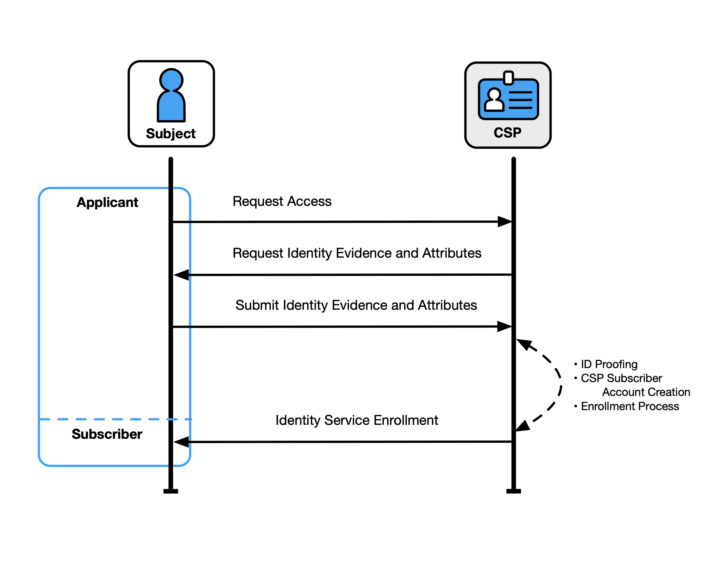
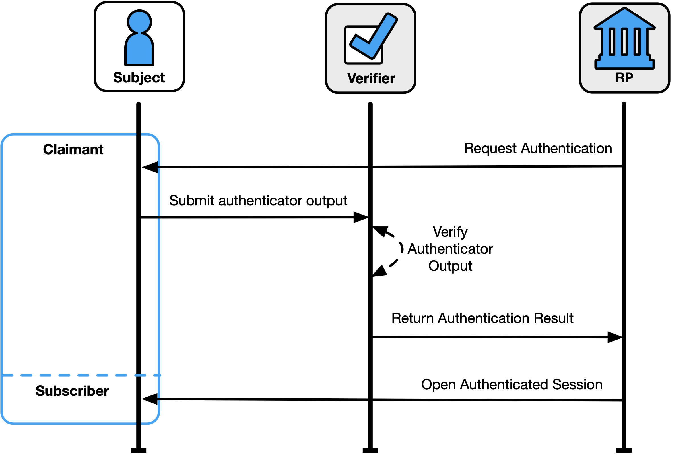
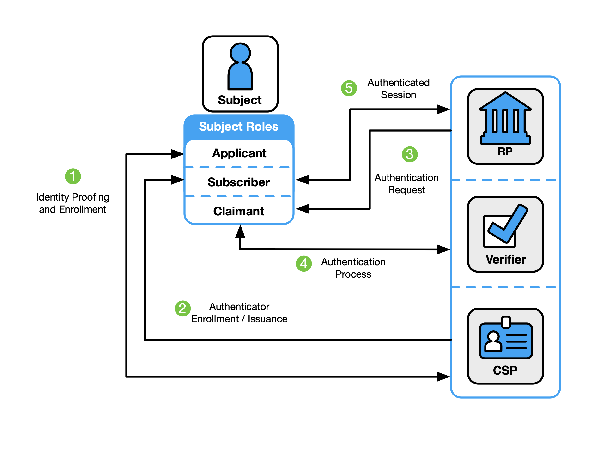
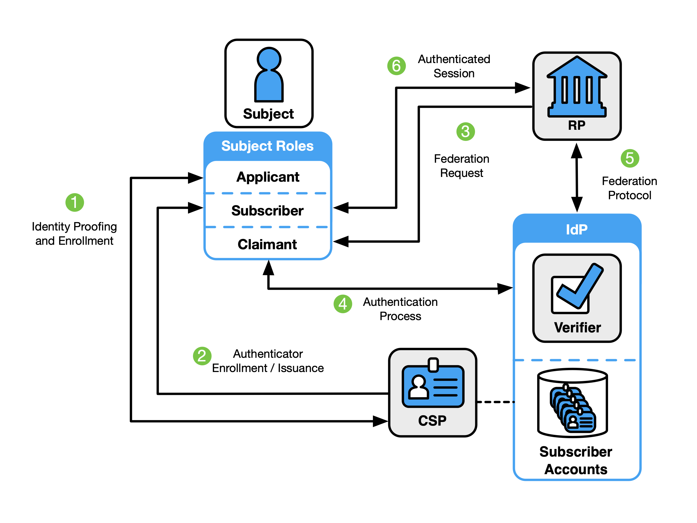
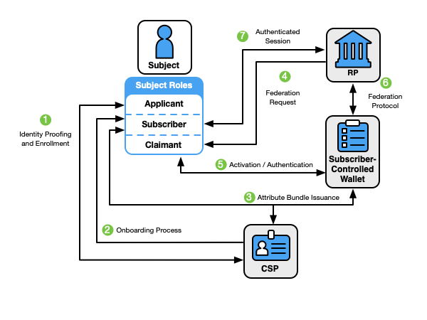
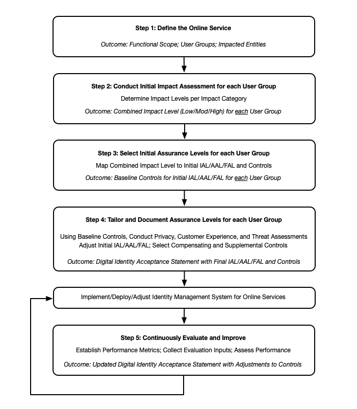

Tue, 26 Aug 2025 08:51:12 -0500
これらのガイドラインは、ネットワーク経由で政府の情報システムとやり取りするユーザー (従業員、請負業者、個人など) の ID 証明、認証、およびフェデレーションを対象としています。これらは、ID 証明、登録、認証子、管理プロセス、認証プロトコル、フェデレーション、および関連するアサーションの各領域の技術要件を定義します。また、役立つ提案として、技術的な推奨事項やその他の有益なテキストも提供します。このガイドラインは、この目的外の標準の開発または使用を制限することを意図したものではありません。この出版物は、NIST Special Publication (SP) 800-63-3 に取って代わります。
アサーション;認証;認証保証。認証;クレデンシャルサービスプロバイダー。デジタル認証;身元証明;フェデレーション;パスワード;PKI です。
この出版物とその付属巻 ([SP800-63A]、[SP800-63B]、および [SP800-63C] ) は、デジタル ID サービスを実装するための技術およびプロセス ガイドラインを組織に提供しています。
このセクションは有益です。
過去数年間のオンライン サービスの急速な普及により、信頼性が高く、安全で、プライバシーを保護するデジタル ID ソリューションの必要性が高まっています。デジタル ID は、オンライン サービスのコンテキストで常に一意です。ただし、人は複数のデジタル ID を持つ可能性があり、デジタル ID はオンライン サービスのコンテキスト内で一意で特定の意味を伝えることができますが、デジタル ID の背後にある個人の実際の ID は知られていない可能性があります。オンラインサービスへのアクセスを提供するために、個人の実際の身元に対する信頼が必要ない場合、組織は匿名または仮名アカウントを使用できます。他のすべてのユースケースでは、デジタル ID は、デジタル ID の所有者と、オンライン サービスと対話する個人、組織、またはシステムとの間に信頼を確立することを目的としています。ただし、このプロセスには課題が生じる可能性があります。間違い、コミュニケーションの誤り、他人の身元を不正に主張する攻撃の機会は複数あります。さらに、個人のニーズ、制約、能力、好みが広範囲に及ぶことを考慮すると、オンライン サービスは、オンライン サービスへの広範かつ永続的な参加とアクセスをサポートするために、柔軟性と顧客エクスペリエンスを念頭に置いて設計する必要があります。
デジタル ID のリスクは動的であり、連続体に沿って存在します。したがって、デジタル ID リスク管理アプローチでは、組織固有のニーズを満たすように設計された結果ベースのアプローチを使用してリスクを管理することを目指す必要があります。これらのガイドラインは、ベースライン コントロール セットとして機能する特定の保証レベルを定義します。これらの保証レベルは、組織のリスク管理ジャーニーの出発点や、異なるエンティティ間の相互運用性をサポートするための共通の構造など、複数の利点を提供します。ただし、組織が ID ソリューションを導入するときに直面するリスク、脅威、または考慮事項の全範囲に包括的に対処することができる保証レベルを作成することは現実的ではありません。このため、これらのガイドラインは、コンプライアンス指向のアプローチではなく、デジタル ID ソリューションの実装に対するリスクベースのアプローチを促進しており、組織はこれらのガイドラインで定義されているプロセスに基づいて制御の実装を調整することが推奨されます。
さらに、デジタル ID に関連するリスクは、オンライン サービスを提供する組織への潜在的な影響を超えて広がります。これらのガイドラインは、個人、コミュニティ、およびその他の組織に対するリスクを強力かつ明確に説明するよう努めています。また、組織は、デジタル ID の決定が、組織のプログラムやサービスとやり取りする個人にどのような影響を与えるか、または対応する必要があるかも考慮する必要があります。個人のプライバシーと顧客体験は、セキュリティとともに考慮する必要があります。さらに、組織は、コールセンターや対面でのやり取りで使用されるものなど、ID 管理のための他のメカニズムと並行して、デジタル ID アプローチを検討する必要があります。ミッションの遂行に顧客中心で継続的に情報に基づいたアプローチを採用することで、組織はサービスを提供する人々との信頼を段階的に構築し、顧客エクスペリエンスを向上させ、問題をより迅速に特定し、個人に適切で効果的な救済オプションを提供する機会を得ることができます。
SP 800-63の最初のバージョンがリリースされて以来、IDサービスの構成、モデル、可用性は大幅に変化しており、セキュアでプライベートで使いやすいサービスをユーザーに展開する際の考慮事項と課題も同様です。この改訂版では、デジタル ID モデル全体の一部としてエンティティが実行する役割と機能に基づいてガイダンスと要件を提示することで、これらの課題に対処します。
さらに、この資料では、NIST リスク管理フレームワーク [NISTRMF] とそのコンポーネント資料を補足するために、資格情報サービス プロバイダー (CSP)、検証者、および証明書利用者 (RP) 向けの手順を提供します。デジタル ID サービスを実装するために組織が従うべきリスク管理プロセスについて説明し、カスタマー エクスペリエンスの考慮事項をどのように組み込む必要があるかを概説することで、NIST RMF を拡張します。また、企業の運営や資産、個人、その他の組織への影響を考慮することの重要性も強調しています。さらに、ID 証明、認証、フェデレーションのためのデジタル ID 管理プロセスには通常、個人情報の処理が含まれており、プライバシー リスクが生じる可能性があります。したがって、これらのガイドラインには、潜在的な関連リスクを軽減するためのプライバシー要件と考慮事項が含まれています。
最後に、これらのガイドラインは、ネットワーク経由でデジタル システムにアクセスする主体のデジタル ID を確立、維持、認証するための技術要件と推奨事項を組織に提供しますが、多くの場合、ID チームや IT チームの制御外にあるシステムやプロセスとの統合も推奨しています。そのため、これらのガイドラインは、組織との調整を改善し、より効果的で最新の顧客主導のオンラインサービスを提供するための考慮事項を提供します。
これらのガイドラインは、有権者(一般市民、ビジネスパートナー、政府職員や請負業者など)に関係なく、デジタルIDにある程度の保証が必要なすべてのオンラインサービスに適用されます。この出版物では、「人」は自然人のみを指します。
これらのガイドラインは、主に、公共の福利厚生にアクセスする個人やコラボレーション スペースにアクセスする民間部門のパートナーなど、外部ユーザーと対話する組織サービスに焦点を当てています。ただし、従業員や請負業者がアクセスする連邦システムにも適用されます。連邦従業員および請負業者の個人本人確認 (PIV) 標準 [FIPS201] と、それに対応する一連の特別出版物と組織固有の指示は、個人本人確認 (PIV) カードの発行と管理、派生 PIV 資格情報として追加のオーセンティケーターのバインド、および PIV システムでのフェデレーション アーキテクチャとプロトコルの使用のための追加の技術的制御とプロセスを提供することにより、連邦企業向けにこれらのガイドラインを拡張します。
これらのガイドラインの対象外のオンラインサービスには、[44 U.S.C. § 3552(b)(6)]で定義されている国家安全保障システムに関連するサービスが含まれます。デジタルプロセスでさまざまなレベルのデジタルID保証を必要とする民間部門の組織、州、地方、および部族の政府は、必要に応じてこれらの標準の使用を検討できます。
これらのガイドラインは、オンライン システム、サービス、およびアプリケーションへの論理アクセスを対象としています。これらは、物理的なアクセス制御プロセスに具体的には対応していません。ただし、これらのガイドラインで指定されているプロセスは、必要に応じて物理アクセスのユースケースに適用できます。さらに、これらのガイドラインは、マシン間認証、相互接続されたデバイス (モノのインターネット [IoT] デバイスなど)、または被験者に代わってアプリケーション プログラミング インターフェイス (API) へのアクセスなど、一部の主題には明示的に対処していません。
これらのガイドラインは、ID 証明、認証、およびフェデレーションの機能中に発生するエラーの悪影響の軽減をサポートします。セクション 3 「デジタル ID リスク管理」では、リスク評価プロセスと、リスク評価の結果と追加のコンテキストが、ID 証明、認証、およびフェデレーション プロセスを保護するためのコントロールの選択にどのように通知するかについて説明します。コントロールは、リスクとミッションに基づいて、特定のサービスに適用可能な各タイプのデジタル ID エラーを軽減するために必要な保証レベルを決定することによって選択されます。
具体的には、組織は保証レベルを選択する必要があります1次の各関数に対して:
SP 800-63 は、次のボリューム スイートとして構成されています。
効果的なエンタープライズリスク管理は、設計上学際的であり、さまざまな要因と期待を考慮する必要があります。デジタルIDリスク管理のコンテキストでは、これらの要因には、情報セキュリティ、詐欺、プライバシー、および顧客エクスペリエンスが含まれますが、これらに限定されません。リスク管理の取り組みでは、企業の資産と運用、個人、およびその他の組織に関連するこれらの要因を比較検討することが重要です。
デジタル ID に関連する要因を分析するプロセス中に、組織は、この出版物で指定されているもの以外の措置が特定の状況 (たとえば、プライバシーまたはその他の法的要件が存在する場合、またはリスク評価の結果により、追加の措置または代替の手続き上の保護措置が適切であると組織が判断する場合) に適切であると判断する場合があります。連邦政府機関を含む組織は、この出版物で指定されていない補償的または補足的な制御を採用できます。また、オンライン サービスの機能を分割して、機密性の低い機能を低いレベルの保証で使用できるようにして、セキュリティを損なうことなくアクセスを改善することも検討できます。
以下に詳述する考慮事項は、企業のリスク管理の取り組みをサポートし、情報に基づいた顧客中心のサービス提供を促進します。この考慮事項のリストはすべてを網羅しているわけではありませんが、デジタル ID 管理に関連する意思決定に影響を与える可能性のある一連の分野横断的な要因を強調しています。
組織にとって、なりすましによる不正アクセスなどのデジタル ID セキュリティ リスクを評価および管理することがますます重要になっています。組織は、これらのガイドラインを参照する際に、サービスを提供する個人やコミュニティに代わって、管理する情報と情報システム、およびサービスプロバイダーとビジネスパートナーが管理する情報と情報システムの機密性、完全性、可用性に対する潜在的な影響を考慮する必要があります。
これらのガイドラインを実施する連邦政府機関は、2014 年連邦情報セキュリティ近代化法 (FISMA) [FISMA] および関連する NIST 標準およびガイドラインに基づく責任を含む法定責任を果たす必要があります。NIST は、これらのガイドラインを実装する連邦政府以外の組織が、デジタル システムの安全な運用を確保するために、同等の標準 (ISO/IEC 27001 など) に従うことを推奨しています。
FISMAは、連邦政府機関に対し、連邦情報および情報システムを不正アクセス、使用、開示、中断、または変更から保護するための適切な管理を実施することを義務付けています。NIST RMF [NISTRMF] は、セキュリティ、プライバシー、サイバー サプライ チェーンのリスク管理活動をシステム開発ライフサイクルに統合するプロセスを提供します。これらのガイドラインに基づいてサービスを提供する連邦政府機関および組織は、FISMA および関連する NIST リスク管理プロセスおよび出版物で要求される管理とプロセスをすでに実装していることが期待されます。
これらのガイドラインに基づく ID、認証、およびフェデレーション保証レベルに含まれる制御および要件は、FISMA および RMF に基づいて決定された情報および情報システム制御を拡張するものであり、置き換えたり変更したりするものではありません。
脅威が進化するにつれて、組織は、ID 証明および認証プロセスに関連する ID 関連の不正リスクを評価および管理することが重要です。組織はこれらのガイドラインを参照する際に、進化する脅威環境、デジタル ID 市場における革新的な不正防止対策の利用可能性、ID 関連の不正がシステムとユーザーに与える潜在的な影響を考慮する必要があります。これは、ID 関連の詐欺がデジタル政府サービスの提供、国民の信頼、組織の評判に大きな影響を与える可能性がある、一般向けのオンライン サービスにとって特に重要です。
このバージョンでは、IAL1を新しい保証レベルとして再利用し、新しい攻撃を考慮して認証リスクと脅威モデルを更新し、フィッシング耐性認証の新しいオプションを提供し、登録プロセスに対する自動攻撃を防ぐための要件を導入し、強力なID証明と認証。
デジタル ID システムを設計、実装、管理する場合、個人情報を処理 (収集、保存、使用、破棄など) する際に個人にプライバシー関連の問題を引き起こす可能性と、問題のあるデータ操作の潜在的な影響を考慮することが不可欠です。個人情報の侵害や機密情報の公開が発生した場合、組織は、プライバシー通知に、どのような情報が不適切に公開されたか、また、その情報がどのように悪用されたかを平易な言葉で説明する必要があります。
組織は、組織のプライバシー ポリシーとシステム プライバシー要件がシステムにどのように実装されているかを示す必要があります。これらのガイドラインでは、組織がプライバシーを念頭に置いてデジタル ID リスク管理を実装するための措置を講じることを推奨しており、これは以下を参照することでサポートできます。
さらに、SP 800-63 の各巻には、その巻に示されているプロセス、制御、要件を実装するための詳細なプライバシー ガイダンスと考慮事項、およびデータの収集、保持、および最小化に関する規範的要件を提供する特定のセクションが含まれています。
これらのガイドラインは、組織が最新で合理化された応答性の高い顧客エクスペリエンスを作成する能力を提供することが不可欠です。これを行うために、ガイドラインにより、組織はリスク管理プロセスで意思決定とトレードオフを行う際に、ユーザーの能力と期待を考慮に入れることができます。これらのガイドラインを実装する組織は、効果的なデジタル ID リスク管理戦略を設定する一環として、ユーザー集団、機能、制限を理解する必要があります。
これらのガイドラインには、応答性が高く効果的な顧客体験を確保するために、いくつかの主要な追加が行われています。このボリュームでは、必要に応じて各ボリュームに新しいテクノロジーを追加するだけでなく、次の 2 つの重要な概念を導入します。
これら 2 つの概念については、このドキュメントのセクション 3 で詳しく説明します。
これらのガイドラインでは、顧客体験の向上の一環として、ユーザーが「顧客がいる場所で顧客に会う」ためのオプションを提供する必要性も強調しています。継続的な改善戦略と顧客中心の設計と組み合わせることで、組織がサービスを提供する人々のニーズを最適にサポートする機会、プロセス、ビジネスパートナー、マルチチャネルのID証明とサービス提供方法を特定するのに役立ちます。
さらに、ユーザビリティとは、システム、製品、またはサービスを使用して、特定の使用コンテキストで有効性、効率性、および満足度を持って目標を達成できる範囲を指します。ユーザビリティは、カスタマーエクスペリエンス、サービス提供、セキュリティの主要な目的をサポートし、デジタルIDシステムまたはプロセスと対話する人々、およびそのユーザー固有の機能と使用コンテキストを理解する必要があります。
このガイドラインの読者は、サービスへの登録と認証のプロセス全体を通じて各ユーザーが関与する対話を総合的なアプローチで検討する必要があります。デジタルIDシステムやプロセスの設計・開発において、代表的なユーザーとのユーザビリティ評価を行い、適切な使用状況で現実的なシナリオやタスクを実行することが重要です。さらに、ユーザビリティのガイドラインと考慮事項に従うことは、組織が顧客エクスペリエンスの目標を達成するのに役立ちます。デジタル ID 管理プロセスは、ユーザーが正しいことを簡単に実行し、間違ったことを実行しにくく、間違ったことが発生したときに簡単に回復できるように設計および実装する必要があります。
\clearpage
このガイドラインでは、テキストで次のタイポグラフィ規則を使用します。
この文書は次のように構成されています。各セクションには、規範的 (つまり、コンプライアンスのために必須) または有益 (つまり、必須ではない) のいずれかとしてラベル付けされています。
これらのガイドラインでは、一般に説明する場合、またはバンドルして説明する場合、IAL、AAL、およびFALをxALと呼びます。各 xAL には 3 つの保証レベルがあります。↩
このセクションは有益です。
これらのガイドラインでは、現在市場で入手可能なテクノロジーとアーキテクチャを反映したデジタル ID モデルを使用しています。これらのモデルにはさまざまなエンティティと機能があり、複雑さも異なります。単純なモデルは、機能 (サブスクライバー アカウントの作成、属性の提供など) を 1 つのエンティティの下にグループ化します。より複雑なモデルは、これらの機能を複数のエンティティ間で分離します。
これらのデジタル ID モデルに見られる役割と機能には、次のものが含まれます。
件名: これらのガイドラインでは、件名は個人であり、デジタル ID プロセスのどの段階にあるかに応じて、3 つの役割のいずれかで表されます。
サービス プロバイダー: サービス プロバイダーは、資格情報サービス プロバイダー、証明書利用者、検証者、ID プロバイダーなど、オンライン サービスへのアクセスの許可と配信に関連する機能の任意の組み合わせを実行できます。
クレデンシャルサービスプロバイダー(CSP):CSPの機能には、ID証明申請者、IDサービスへの登録、サブスクライバーアカウントの確立、およびそれらのアカウントへのオーセンティケーターのバインドが含まれます。サブスクライバ アカウントは、サブスクライバ、サブスクライバの属性、および関連するオーセンティケータの CSP の確立されたレコードです。CSP 機能は、独立した第三者によって実行される場合があります。
証明書利用者 (RP): RP はオンライン トランザクションとサービスを提供し、検証者が加入者の ID を主張してそれらのサービスへのアクセスを許可します。フェデレーションを使用する場合、RP は ID プロバイダー (IdP) からのアサーションを通じてサブスクライバ アカウント内の情報にアクセスします。
検証者: 検証者は、認証プロトコルを使用して、要求者が 1 つ以上の認証子を所有および制御していることを検証することにより、要求者の身元を確認します。これを行うには、検証者はオーセンティケーターと加入者アカウントのバインドを確認し、加入者アカウントがアクティブであることを確認する必要があります。
ID プロバイダー (IdP): フェデレーションを使用する場合、IdP はサブスクライバーのプライマリ オーセンティケーターを管理し、サブスクライバー アカウントから派生したアサーションを発行します。
CSP、検証者、IdP の機能は別々の役割として提示されますが、実装に応じて、単一のエンティティによって実行される場合もあれば、複数のエンティティに分散される場合もあります (セクション 2.5 を参照)。
[SP800-63A]、デジタル ID ガイドライン: ID 証明と登録は、ID 証明と登録のプロセスに関する一般的なガイダンス情報と規範的要件、および IAL 固有の要件を提供します。
[SP800-63A] は、ID 証明および登録プロセスに関する一般情報と規範要件、および IAL に固有の要件を提供します。
図 1 は、ID 証明機能と登録機能の一般的なトランザクション シーケンスを示しています。
本人確認と登録は、申請者が本人確認を開始したときに開始され、多くの場合、CSP によって提供されるオンライン申請にアクセスしようとします。CSP またはそのコンポーネント サービスは、申請者に身元証拠と属性を要求し、申請者はオンラインまたは対面の取引を通じて提出します。CSP は、ユーザーを解決 (つまり、ユーザーを一意に区別し)、証拠の正確性と信頼性を検証し、属性の正確性を検証します。申請者が ID 証明に成功すると、その CSP のサブスクライバーとして ID サービスに登録されます。次に、一意のサブスクライバー アカウントが作成され、1 つ以上のオーセンティケーターがそのアカウントに登録されます。
加入者には、認証システムの制御を維持し(盗難防止など)、CSPポリシーを遵守してCSPとの良好な状態を維持する責任があります。

登録時に、CSP はサブスクライバー アカウントを確立して、各サブスクライバーを一意に識別し、サブスクライバーとそのサブスクライバー アカウントにバインドされているオーセンティケーターに関する情報を記録します。
詳細および規範的要件については、[SP800-63A] の第 5 節、加入者アカウントを参照してください。
[SP800-63B]、認証および認証管理では、許可される認証システムの種類、その特性(フィッシング耐性など)、および各AALに適した認証プロセスについて規範的に説明されています。
オーセンティケーターは、認証プロトコル内の 1 つ以上の要素の制御または所有を示す手段です。これらのガイドラインでは、認証に使用される 3 種類の認証要素を定義しています。
単一要素認証では、上記の要素のうち 1 つだけが必要であり、ほとんどの場合、「知っているもの」です。同じ要素の複数のインスタンスは、依然として単一要素認証を構成します。たとえば、ユーザーが生成した PIN とパスワードは、どちらも「知っているもの」であるため、2 つの要素を構成するものではありません。多要素認証 (MFA) とは、複数の異なる要素を使用することを指します。
このガイドラインでは、オーセンティケーターには常にシークレットが含まれているか、シークレットを構成することを指定します。オーセンティケーターに含まれるシークレットは、キーペア(非対称暗号化キー)または共有シークレット(対称暗号化キー、ワンタイムパスワード(OTP)を生成するためのシード、パスワードなど)のいずれかに基づいています。非対称鍵ペアは、公開鍵と関連する秘密鍵で構成されます。秘密鍵はオーセンティケーターに保存され、オーセンティケーターを所有および制御するクレーマンのみが使用できます。対称キーは、通常、ネットワークベースの推測攻撃を阻止するのに十分な長さで、ランダムに選択され、複雑で、加入者が制御するハードウェアまたはソフトウェアに保存されます。
多要素認証システムのアクティベーション要素としてローカルで使用されるパスワードは、アクティベーションシークレットと呼ばれます。アクティベーションシークレットは、保存されている認証キーへのアクセスを取得するために使用され、オーセンティケータとそれに関連するユーザーエンドポイント内に残ります。アクティベーションシークレットの例としては、PIVカードのアクティベートに使用されるPINがあります。
生体認証特性は、認証時に物理的に存在する人の身元を確認するために使用できる固有の個人属性です。これには、顔の特徴、指紋、虹彩のパターンなどが含まれます。生体認証特性は単一要素認証には使用できませんが、物理的な認証システム(つまり、あなたが持っているもの)と組み合わせて、多要素認証の認証要素として使用できます。
一般的に使用される認証方法の中には、シークレットが含まれていない、またはシークレットが含まれていないものもあるため、次のようなこれらのガイドラインの下での使用は認められません。
認証プロセスにより、RPは、請求者が本人であることをある程度保証することができます。図2の認証プロセスの例は、RP、クレーム、および検証者/CSP間の相互作用を示しています。検証者は機能的な役割であり、CSP、RP、またはその両方と組み合わせて実装されることがよくあります(図4を参照)。

認証プロセスが成功すると、要求者が、サブスクライバーの ID にバインドされた 1 つ以上の有効なオーセンティケーターを所有および制御していることが示されます。一般に、これは、検証者とクレーム者の間の相互作用を含む認証プロトコルを使用して行われ、クレーマンは 1 つ以上のオーセンティケーターを使用して、検証者に送信されるオーセンティケーター出力を生成します。検証者は出力を検証し、肯定的な結果を RP に渡します。次に、RP は、検証済みの加入者との認証済みセッションを開きます。
相互作用の正確な性質は、システムの全体的なセキュリティを決定する上で重要です。適切に設計されたプロトコルは、認証中および認証後の両方で、請求者と検証者間の通信の整合性と機密性を保護し、正規の検証者を装った攻撃者による損害(フィッシングなど)を制限するのに役立ちます。
規範的要件は、[SP800-63C]、フェデレーションおよびアサーションに記載されています。
OMB [M-19-17]のセクションIII「Enabling Mission Delivery through Improved Identity, Credential, and Access Management」では、政府機関に対し、政府間のIDフェデレーションと相互運用性をサポートするよう指示しています。フェデレーションという用語は、異なる信頼ドメイン間での情報の共有を伴ういくつかの異なるアプローチに適用でき、ドメイン間で共有される情報の種類によって異なる場合があります。これらのガイドラインは、フェデレーションのアサーションを通じて、一連のネットワーク化されたシステム全体で信頼契約に基づいて ID と認証情報を伝達できるようにするフェデレーションプロセスに対応しています。
フェデレーション アーキテクチャを使用すると、次のような多くの利点がありますが、これらに限定されません。
RP と IdP が共通のセキュリティ ドメインで一緒に管理されていない場合、フェデレーション プロセスは一般に推奨される認証アプローチですが、フェデレーションは 1 つのセキュリティ ドメイン内で適用して、一元化されたアカウント管理や技術統合など、さまざまな利点を得ることもできます。
これらのガイドラインは、組織が選択する ID 証明、認証、およびフェデレーション アーキテクチャにとらわれず、組織が独自の要件に従ってデジタル ID スキームを展開できるようにします。ただし、次のような、組織または個々のアプリケーションに対してローカルな ID サービスを確立するよりも、フェデレーションの方が効率的かつ効果的なシナリオがあります。
\clearpage
組織は、次のいずれかに該当する場合に、フェデレーテッド ID 属性の受け入れを検討することができます。
非フェデレーションデジタルIDモデルを構成するエンティティと相互作用を図3に示します。汎用フェデレーテッドデジタルIDモデルを図4に示し、加入者制御ウォレットを備えたフェデレーテッドデジタルIDモデルを図5に示します。
図3と図4に示した2つのケースでは、検証者は認証アクティビティを完了するためにCSPとリアルタイムで通信する必要は必ずしもありません(たとえば、デジタル証明書を使用できます)。したがって、検証ツールと CSP の間の線は、2 つのエンティティ間の論理リンクを表します。一部の実装では、検証者、RP、および CSP 関数が分散されています。ただし、これらの関数が同じプラットフォーム上に存在する場合、関数間の相互作用は、ネットワークプロトコルを使用するのではなく、同じシステム上で実行されるアプリケーションまたはアプリケーションモジュール間のシグナルです。

図 3 は、非フェデレーテッド モデルにおける一般的な相互作用シーケンスの例を示しています。他のシーケンスも同じ機能要件を達成できます。ID 証明と登録アクティビティの一般的な一連の対話は、次のように表されます。
ステップ 3 から 5 は、ステップ 1 と 2 の直後に行うことも、後で実行することもできます。非フェデレーテッドモデルでデジタル認証を実行するために 1 つ以上のオーセンティケーターを使用する際の通常の対話シーケンスは次のとおりです。

図 4 は、フェデレーテッド モデルにおける同じ一般的な相互作用の例を示しています。
フェデレーテッド モデルで 1 つ以上のオーセンティケーターを使用してデジタル認証を実行する際の通常の一連の対話は次のとおりです。
図5.加入者制御ウォレットを使用したフェデレーテッドデジタルIDモデルの例

図5は、加入者がソフトウェア(デジタルウォレットなど)を備えたデバイス、またはIdPとして機能するクラウドサービスプロバイダー(ホスト型ウォレット)のアカウントを制御するフェデレーテッドデジタルIDモデルでの相互作用の例を示しています。「3者モデル」の用語では、CSPは発行者、IdPは保有者(つまり、ユーザーに代わって動作するユーザーデバイスまたはエージェント)、RPは検証者です。このモデルでは、[SP800-63C] のセクション 3.5 で定義されているように、RP がフェデレーション機関を使用して CSP と信頼契約を確立するのが一般的です。この配置により、[SP800-63C]のセクション5で説明されているように、RPはウォレットとの直接の信頼関係を必要とせずに、加入者制御ウォレットからのアサーションを受け入れることができます。
他のプロトコルや仕様では、属性バンドルを資格情報と呼ぶことがよくあります。これらのガイドラインでは、資格情報という用語を使用して、別の概念を指します。競合を回避するために、これらのガイドラインでは属性バンドルという用語が使用されます。属性バンドルの規範的要件は、[SP800-63C]のセクション3.12.1に記載されています。
\clearpage
加入者が制御するウォレットからRPにアサーションを提供する際の通常の一連のやり取りは次のとおりです。
このセクションは規範的です。
このセクションでは、オンライン サービスのユーザー、サービス プロバイダー組織、およびそのミッションおよびビジネス パートナーに対する残存リスクを含む、オンライン サービスに関連するデジタル ID リスクを評価するための方法論について説明します。これらのリスクを軽減する、使用可能でプライバシーを強化するセキュリティと不正防止制御の選択に関するガイダンスを提供します。さらに、選択したコントロールのパフォーマンスを継続的に評価することの重要性も強調されています。
デジタル・アイデンティティ・リスク管理(DIRM)プロセスは、(1)アイデンティティ・システムによって対処される可能性のあるオンライン・サービスの運用から生じるリスクと、(2)アイデンティティ・システムの実装の結果として生じる追加リスクの2つの側面に従って、リスクの特定と管理に焦点を当てています。
リスクの最初のディメンションは、最初の保証レベルの選択を通知し、ID システムによって対処される可能性のあるオンライン サービスの侵害に関連するリスクを特定しようとします。例えば：
ID システムによって対処できるオンライン サービスの侵害に関連するリスクがある場合は、最初の保証レベルが選択され、リスクの 2 番目の次元が考慮されます。
リスクの 2 番目の側面は、ID システム自体によってもたらされるリスクを特定し、調整プロセスに情報を提供します。調整は、プライバシー、ユーザビリティ、現実世界の脅威に対する回復力などの分野で進行中の詳細なリスク評価に基づいて、最初に評価された保証レベルを変更したり、補償または補足的なコントロールを実装したり、選択したコントロールを変更したりするプロセスを提供します。
ID システム自体によってもたらされるリスクによって生じる可能性のある影響の種類の例は次のとおりです。
DIRM プロセスの結果は、デジタル ID モデル内でエンティティが果たす役割によって異なります。
CSP と IdP は、サービスを提供する RP によって要求される保証レベルでサービスを提供することが期待されています。ただし、このガイドラインから逸脱したり、サービスを強化したりすることを選択した CSP および IdP は、簡略化されたデジタル ID リスク評価を実施し、その変更を RP に提供されるデジタル ID 受け入れステートメントに文書化することが期待されます (セクション 3.4.4 を参照)。
このプロセスは、[FISMA]で要求されるリスク管理プロセスを強化します。オンライン・サービスに対する DIRM 影響評価の結果は、基盤となるアプリケーションまたはシステムの FISMA 影響レベルとは異なる場合があります。ID プロセスの失敗により、さまざまなユーザー グループにさまざまなレベルの影響が生じる可能性があります。たとえば、決済システムに対して評価された全体的なFISMA影響レベルは、機密性の高い財務データがシステムによって処理されているため、「FISMA中程度」の影響カテゴリになる可能性があります。ただし、永続的なアカウントが確立されていないゲスト支払いを行う個人の場合、認証とプルーフの影響レベルは低くなる可能性があります。政府機関の権限を与える職員は、オンラインサービスをサポートする基盤となる情報システムの運用権限(ATO)の一部として、DIRM プロセスの遵守を証明する文書を要求すべきです(SHOULD)。政府機関の権限を与える職員は、CSPとの統合のための調達またはATOプロセスの一環としてDIRMプロセスの遵守を証明する文書をCSPから要求すべきです(SHOULD)。
これらのガイドラインでは、FISMA影響レベルという用語を使用しています。他の NIST RMF 資料でも、このような影響の分類を指すために「システム影響レベル」という用語が使用されています。
DIRM プロセスには 5 つのステップがあります。

図 6 は、DIRM プロセス・フローの各ステップの主なアクションと結果を示しています。段階的なアプローチとして提示されますが、プロセスには、最初のタスク実行とタスクの再検討の間の反復サイクルの必要性など、順次からの逸脱を必要とする多くのポイントが存在する可能性があります。たとえば、評価の進行中に新しい規制や要件が導入されると、組織はプロセスのステップを再検討する必要がある場合があります。さらに、新機能、データ使用量の変更、脅威環境の変更により、組織は、オンライン サービスの保証レベルや関連する制御を変更する可能性など、いつでも DIRM プロセスのステップを再検討する必要がある場合があります。
組織は、組織のプロセス、ガバナンス、およびエンタープライズリスク管理の慣行を満たすために、この全体的なアプローチを適応および変更する必要があります。少なくとも、組織は、DIRM プロセス全体で使用される組織固有のプロセスまたはツールに関係なく、各ステップを実行して文書化し、各ステップの規範的な義務と結果を完了して文書化するものとします。さらに、組織は、ID 管理システムの設計とパフォーマンス評価を通知するために、オンライン サービスのユーザー集団の代表的なサンプルと協議すべきです (SHOULD)。
オンライン サービスを定義する目的は、その機能を理解し、そのコンテキストの共通の理解を確立することであり、DIRM プロセスの後続のステップに情報を提供します。オンライン・サービスの役割は、より広範なビジネス環境および関連プロセスの一部としてコンテキスト化され、その結果、オンライン・サービスの範囲、ユーザー・グループとその期待、処理されるデータ、影響を受けるエンティティー、およびその他の関連詳細の記述が文書化されます。
RPは、少なくとも以下を含むオンラインサービスの説明を作成するものとします(SHOULD)。
デジタル ID システムの障害により、権限のないユーザーがオンライン サービスにアクセスしたことから生じる、さまざまなエンティティに対する予期しない望ましくない影響と影響の規模を考慮することが不可欠です。たとえば、攻撃者が発電所を制御するオンラインサービスに不正アクセスした場合、悪意のある行為者が取った行動は、施設の近くに住む地域住民に壊滅的な環境影響を与え、発電所がサービスを提供する地域に停電を引き起こす可能性があります。
このドキュメントで説明されているように、ユーザー グループと影響を受けるエンティティを区別することが重要です。オンライン サービスでは、そのユーザー グループに提供される機能の種類に基づいて、いくつかのユーザー グループに分割される一連のユーザーへのアクセスが許可されます。たとえば、オンライン所得税申告およびレビューサービスには、(1) 個人の納税申告書のステータスを確認する必要がある市民、(2) クライアントに代わって納税申告書を提出する税務申告書作成者、(3) さまざまなユーザーグループに権限を割り当てたり、必要に応じて新しいユーザーグループを作成したりするシステム管理者のユーザーグループがあります。影響を受けるエンティティには、デジタル ID システムに障害が発生した場合に悪影響に直面する可能性のあるすべてのエンティティが含まれます。これには、ユーザー グループのメンバーが含まれる可能性がありますが、システムを直接使用しないユーザーも含まれる場合があります。
したがって、影響評価の範囲には、オンラインアプリケーションを使用する個人と組織自体が含まれるものとします(SHOULD)。さらに、組織は、ミッションとビジネスのニーズに基づいて具体的に含める必要がある他のエンティティ(例えば、ミッションパートナー、コミュニティ、および[SP800-30]で特定されたもの)を特定するものとします。少なくとも、組織は、影響評価を実施する際に、影響を受けるすべてのエンティティ(組織の内部および外部の両方)を文書化するものとします。
このステップの出力は、オンライン・サービスによって提供される機能の影響を受けるユーザー・グループおよびその他のエンティティのリストを含む、オンライン・サービスの文書化された説明です。この情報は、次のセクションで詳述する影響評価を効果的に適用するための基礎として機能し、コンテキストを確立します。
DIRM プロセスのこのステップでは、ID システムによって対処される可能性のあるオンライン サービスに対するリスクを特定することにより、リスクの最初の側面に対処します。
初期影響評価の目的は、オンライン サービスに固有の ID 証明、認証、およびフェデレーションの障害による潜在的な悪影響を特定し、最初の一連の保証レベルを生成することです。RPは、このステップを実行する際に、過去のデータとユーザーフォーカスグループの結果を考慮するべきです(SHOULD)。 影響評価には以下が含まれるものとします。
第3.1条で特定された各ユーザーグループへの影響レベルは、そのユーザーグループが利用できる取引に基づいて個別に検討されるものとする(MUST)。これにより、組織は各ユーザーグループに適した保証レベルを最大限柔軟に選択および実装できます。ユーザーグループ、組織、その他の団体への影響は影響評価の主な考慮事項ですが、組織は規模(取引の影響を受ける人の数など)も考慮すべきです(SHOULD)。
この評価の出力は、各ユーザーグループに対して定義された影響レベル(つまり、低、中、または高)です。これは、最初の保証レベル選択への主要な入力として機能します。
オンライン サービスには、サービスによって提供される機能にアクセスするために認証するユーザーとユーザー グループの個別のセットがありますが、ID 証明、認証、またはフェデレーションのエラーにより、なりすましや攻撃者がオンライン サービスへの不正アクセスを取得すると、影響を受けるエンティティのセットがはるかに大きくなる可能性があります。セクション3.1では、そのような影響を受けるエンティティがオンラインサービスの定義の一部として特定され、文書化されます。
このステップでは、組織は、特定のオンライン サービスの影響を受けるエンティティに適用できる影響のカテゴリを特定します。少なくとも、組織は、影響評価に次の影響カテゴリを含めるものとします。
組織は、ミッションとビジネス目標に基づいて、必要に応じて追加の影響カテゴリを含める必要があります。各影響カテゴリは、組織が提供するさまざまなオンラインサービスにわたってDIRMプロセスを実装する際に文書化され、一貫して適用されるものとします(SHOULD)。
害とは、影響を受ける事業体が経験するあらゆる悪影響を指します。これらは、影響カテゴリと、オンライン サービスの影響を受ける特定のエンティティにどのように適用されるかを効果的に理解する手段を提供します。各影響カテゴリについて、組織は、セクション3.1で特定された影響を受ける各エンティティの潜在的な危害を考慮するものとします。
各カテゴリに関連する害の例は次のとおりです。
この活動の結果は、影響を受けるエンティティへの悪影響を評価するために使用される影響カテゴリと害のリストです。
このステップでは、組織は、組織が選択した影響カテゴリごとに、権限のないユーザーがオンラインサービスにアクセスすることによって引き起こされる潜在的な影響レベルを評価します(セクション3.2.1から)。影響レベルは、次のいずれかの潜在的な影響値を使用して割り当てられます。
各ユーザーグループは、オンラインサービスを通じて、異なる特権と機能のセットを持つことができます。したがって、侵入者が特定のユーザーグループのメンバーとして不正アクセスを取得した結果として、各影響カテゴリで影響を受けるエンティティの各セットに対する悪影響を考慮する必要があります。影響レベルの割り当てのより客観的な根拠を提供するために、組織は、各影響カテゴリの影響レベルのしきい値と例を開発する必要があります。これが行われる場合、特に具体的に定義された定量化可能な値を使用して、これらのしきい値は文書化され、リスクの共通の理解を可能にするために、組織全体のDIRM評価で一貫して使用されるものとします。
各影響カテゴリにおける潜在的な影響の例は次のとおりです。
このガイドラインは、3つの影響レベルを提供します。ただし、組織は、より詳細な影響レベルを定義し、最初の影響評価活動のための独自の方法論を開発することができます(MAY)。
影響分析では、侵入者が特定のユーザーグループのメンバーとしてオンラインサービスに不正アクセスを取得し、影響を受けるエンティティに悪影響を与えるトランザクションを開始する結果、IDシステム機能(ID証明、認証、およびフェデレーションなど)のいずれかの侵害の影響レベル(低、中、または高)を考慮します。影響分析では、次の側面が考慮されます。
影響分析は、侵入者が各ユーザグループのメンバーとして不正アクセスを取得した場合、影響を受けるエンティティのタイプごとに、各影響カテゴリの影響レベルを考慮するものとします(SHOULD)。各ユーザグループで異なるトランザクションセットが利用可能であるため、この分析では各ユーザグループを個別に検討することが重要である。
例えば、水処理施設の制御、運用、監視を可能にするオンラインサービスの場合、各ユーザーグループ(例えば、施設を制御・運用する技術者、監査人および監視担当者、システム管理者)は、オンラインサービスを通じてそのユーザーグループが利用できるトランザクションに基づいて個別に考慮されます。影響分析は、悪意のある行為者がユーザーグループのメンバーとしてオンラインサービスへの不正アクセスを取得した場合に考慮される影響カテゴリごとに、影響を受けるさまざまなエンティティ(例えば、水を飲む市民、施設を所有する組織、監査人、監視官)に対する影響レベル(つまり、低、中、または高)を評価します。
影響分析は、オンライン サービスにアクセスできるユーザー グループごとに実行されるものとします (SHALL SHOULD)。影響カテゴリごとに、ID 管理機能の障害によって引き起こされたオンライン サービスの侵害の結果として、影響を受けるエンティティごとに影響レベルが推定されます。
エンティティの特定の影響カテゴリに危害または影響がない場合、影響レベルを なし としてマークできます。
この影響分析の出力は、各ユーザーグループの一連の影響レベルであり、セクション3.4に従ってさらなる分析のために適切な形式で文書化されるものとします。
各ユーザーグループの影響評価レベルを組み合わせて、そのユーザーグループのID証明、認証、および/またはフェデレーション機能の侵害による影響を受けるエンティティへのリスクを表す単一の影響レベルを確立します。
組織は、この組み合わせ分析に次のようなさまざまな方法を適用できます。
組織は、影響評価を定義された各ユーザーグループの全体的な影響レベルに組み合わせるために使用するアプローチを文書化し、それをすべてのオンラインサービスに一貫して適用するものとします。組み合わせ分析の終了時に、組織は各ユーザーグループの影響を文書化するものとします。
このステップの結果は、ID 管理システムの機能 (つまり、ID 証明、認証、フェデレーション) の侵害により、各ユーザー グループに対する効果的な影響レベルになります。
実効影響レベル(すなわち、低、中、または高)は、各ユーザーグループの初期保証レベルを選択するプロセスへの主要な入力として機能します(セクション3.3.1を参照)、およびコンパニオンボリューム[SP800-63A]、[SP800-63B]、および[SP800-63C]の要件とガイドラインから、対応するベースラインデジタルID制御のセットを特定します。各ユーザーグループの結果として得られる初期保証レベルは、3つのデジタルIDシステム機能(すなわち、ID証明、認証、およびフェデレーション)すべてに適用されます。
選択されたデジタルID制御とプロセスの最初のセットは、ID管理システムによって生成される潜在的なリスクに基づいて、ステップ4で評価され、調整されます。
オンラインサービスの機能および展開されたアーキテクチャによっては、1つまたは複数のID管理機能(すなわち、ID証明、認証、およびフェデレーション)のサポートが必要になる場合があります。これらの機能の強度は、保証レベルの観点から説明されます。RPは、オンラインサービスに適用される保証レベルのタイプを以下から識別するものとします(SHALL SHOULD)。
各 xAL の概要を以下に示します。このサブセクションでは、保証レベルの高レベルの説明が記載されていますが、このガイドラインの読者は、各保証レベルの規範的なガイドラインと要件については、付属の巻[SP800-63A]、[SP800-63B]、および[SP800-63C]を参照することをお勧めします。
IAL1:IAL1 は、要求された ID の現実世界の存在をサポートし、申請者がその ID に関連付けられていることをある程度保証します。コア属性は、身元証拠から取得されるか、申請者が自己主張します。すべてのコア属性は、権威ある情報源または信頼できる情報源に対して検証され、その属性を身元証明プロセスを受ける人物にリンクするための手順が講じられます。
IAL2:IAL2 では、追加の証拠を収集し、証拠を検証し、身元を確認するためのより厳密なプロセスが必要です。
IAL3:IAL3 では、訓練を受けた CSP 担当者 (つまり、校正エージェント) が、オンサイトでの出席式本人確認セッションの一環として、申請者と直接対話し、少なくとも 1 つの生体認証を収集するという要件が追加されています。
表 1 は、各 ID 保証レベルの制御目標 (つまり、攻撃保護) を示しています。
| アイアル | 制御目標 | ユーザープロファイル |
|---|---|---|
| IAL1 | 拡張性の高い攻撃を制限します。合成 ID から保護します。侵害された個人情報を使用する攻撃から保護します。 | 個人情報へのアクセスは必須ですが、制限されています。ユーザーの行動(個々の個人情報の閲覧や修正など)は制限されます。利用可能なユーザー機能を通じて詐欺を直接行うことはできません。ユーザーは、オフラインまたは手動のプロセスが実行されるまで支払いを受け取ることができません。 |
| IAL2 | 規模を拡大し、標的を絞った攻撃を制限します。基本的な証拠の改ざんや盗難から保護します。基本的なソーシャルエンジニアリングから保護します。 | ユーザーは、財務情報(口座振込場所など)を表示および変更できます。個人は、利用可能なアプリケーション機能を通じて金融詐欺を直接実行できます。ユーザーは、他のユーザーの個人情報を表示または変更することができます。ユーザーは、専有情報を可視化したり、アクセスしたりできます。 |
| IAL3 | 高度な攻撃を制限します。高度な証拠の改ざん、盗難、否認から保護します。高度なソーシャルエンジニアリング攻撃から保護します。 | ユーザーは、複数の機密性の高いレコードに直接アクセスできます。サーバー、システム、またはセキュリティ データへの管理者アクセス。1 人または複数のユーザーに関する機密情報を明らかにする可能性のある大規模なデータセットにアクセスする機能。または、OMB のガイダンスの下で重大なインシデントを構成する侵害につながる可能性のあるアクセス。 |
AAL1:AAL1 は、クレーマンがサブスクライバー アカウントにバインドされたオーセンティケーターを制御しているという基本的な信頼性を提供します。AAL1 では、利用可能な幅広い認証テクノロジーを使用した単要素認証または多要素認証が必要です。検証者は、AAL1 で多要素認証オプションを利用できるようにし、その使用を奨励することが期待されています。認証を成功させるには、クレームは、安全な認証プロトコルを通じてオーセンティケーターの所有と制御を証明する必要があります。
AAL2:AAL2 は、クレーマントが加入者アカウントにバインドされている 1 つ以上のオーセンティケータを制御しているという高い信頼性を提供します。セキュアな認証プロトコルを使用して、2 つの異なる認証要素の所有と制御の証明が必要です。承認された暗号化技術が必要です。
AAL3 の場合:AAL3 は、要求者が加入者アカウントにバインドされているオーセンティケーターを制御しているという非常に高い信頼性を提供します。AAL3 での認証は、暗号化プロトコルとアクティベーション ファクターまたはパスワードのいずれかを使用したキーの所有の証明に基づいています。AAL3 認証では、フィッシング耐性を提供するエクスポート不可能な秘密キーを備えた公開キー暗号化オーセンティケーターを使用する必要があります。承認された暗号化技術が必要です。
表 2 は、各認証保証レベルの制御目的(つまり、攻撃保護)を示しています。
| AALの | 制御目標 | ユーザープロファイル |
|---|---|---|
| AAL1 | 攻撃に対する最小限の保護を提供します。パスワードに焦点を当てた攻撃を抑止します。 | どのユーザーも個人情報を利用できませんが、アプリケーションの使いやすさとカスタマイズをサポートするために、一部のプロファイルまたは設定データが保持される場合があります。 |
| AAL2 | 多要素認証を必須にします。フィッシング対策のオプションを提供します。 | 利用者は、個々の個人情報を閲覧または修正することができます。ユーザーが閲覧できる機密情報は限られています。 |
| AAL3 | フィッシング耐性と検証者の侵害保護が必要です。 | 機密性の高い情報を表示または変更できます。複数の専有レコードは、ユーザーが表示または変更できます。特権ユーザー アクセスにより、OMB ガイダンスの下で重大なインシデントを構成する侵害が発生する可能性があります。 |
FAL1:FAL1 は、フェデレーショントランザクションの基本的なレベルの保護を提供し、幅広いユースケースとデプロイメントの決定をサポートします。
ファル2:FAL2 は、フェデレーション トランザクションに対する高レベルの保護と、フェデレーテッド トランザクションにアサーションを挿入する試みなど、フェデレーテッド システムに対するさまざまな攻撃に対する追加の保護を提供します。
FAL3:FAL3 は、フェデレーション トランザクションに対して非常に高いレベルの保護を提供し、フェデレーション トランザクションで通信される情報が CSP および IdP によって確立された情報と一致するという非常に高い信頼性を確立します。
表 3 は、各フェデレーション保証レベルの制御目標 (つまり、攻撃保護) を示しています。
| ファル | 制御目標 | ユーザープロファイル |
|---|---|---|
| ファル1 | 偽造されたアサーションから保護します。 | 機密性の高い個人情報はどのユーザーも利用できませんが、アプリケーションの使いやすさやカスタマイズをサポートするために、一部のプロファイルまたは設定データが保持される場合があります。 |
| FAL2 | 偽造されたアサーションやインジェクション攻撃から保護します。 | ユーザーは、適切な認証保証レベル(AAL2以上など)で個人情報やその他の機密データにアクセスできます。 |
| FAL3 | IdP の侵害から保護します。 | フェデレーションは、主に属性交換をサポートします。ユーザーは、OMB のガイダンスの下で重大なインシデントを構成する侵害につながる可能性のある機密情報または機密性の高い情報またはサービスにアクセスできます。 |
\clearpage
組織は、デジタルIDシステムの障害の潜在的な影響に基づいて、初期保証レベルとコントロールを選択するためのプロセスとガバナンスモデルを開発し、文書化するものとします。以下のサブセクションでは、初期保証レベルを選択するプロセスで考慮すべき主要な要素に関するガイダンスを提供します。
各ユーザーグループの全体的な影響レベルは、デジタルID機能内の障害の影響に基づいて、評価対象のオンラインサービスの初期保証レベルと関連する技術的およびプロセス制御を選択するための基礎として使用されます。初期保証レベルと管理は、DIRM プロセスの次のステップでさらに評価および調整できます。
最初の影響評価 (セクション 3.2 を参照) と各ユーザー グループに対する影響レベルの統合決定 (セクション 3.2.4 を参照) では、ID 証明、認証、およびフェデレーションのリスクが区別されませんが、選択された最初の xAL は依然として異なる可能性があります。たとえば、最初の影響評価は影響が低く、IAL1 と FAL1 を示す場合がありますが、個人情報にアクセスできるため AAL2 が必要であると判断する場合もあります。同様に、影響評価では、証明が不要であると判断され、認証とフェデレーションのベースラインに関係なく IAL が生成されない場合があります。ステップ 4: 調整で説明されているように、調整プロセスによってさらに変更が生じる可能性があります。
このステップの出力は、各ユーザー・グループのオンライン・サービスに適用可能な初期 xAL のセットです。
最初の保証レベルを選択する前に、RP はオンライン サービスのユーザーに対して ID 証明が必要かどうかを判断する必要があります。オンラインサービスがデジタル取引を実行するために個人情報を必要としない場合、本人確認は必要ありません。個人情報が必要な場合、RP は、検証済みの属性が必要かどうか、または自己主張された属性が許容されるかどうかを判断する必要があります。また、自己主張する属性を受け入れることによる潜在的な害が重要でない場合、システムは身元証明なしで動作できる可能性があります。このような場合、[SP800-63A]に記載されている本人確認処理は、本システムには適用されません。
オンラインサービスでID証明が必要な場合は、単純なマッピングプロセスを通じて最初のIALが選択されます。
組織は、申請に本人確認が必要かどうかを文書化するものとし、必要であれば、第3.2.4条の実効影響レベルの決定に基づいて、各ユーザーグループの最初のIALを選択するものとする(SHOULD)。
IALは、申請者が主張された現実の身元を保持しているという保証のレベルを反映しています。最初の選択では、ID 証明プロセスにおける障害によるより高い潜在的な影響は、より高い保証プロセスによって軽減される必要があることを前提としています。
認証は、個人情報、保護された情報、または加入者アカウントへのアクセスを提供するオンライン サービスに必要です。組織は、認証保証レベルと認証メカニズムの適用に関する決定を下す際に、オンライン サービスを管理する法的、規制的、またはポリシーの要件を考慮する必要があります。たとえば、[EO13681] は、「デジタル アプリケーションを通じて市民が個人データにアクセスできるようにするすべての組織は、複数の認証要素を使用する必要がある」と述べており、これらの基準を満たすアプリケーションには最低限 AAL2 を選択する必要があります。
オンライン サービスで認証の実装が必要な場合は、単純なマッピング プロセスを通じて初期 AAL が選択されます。
組織は、オンラインサービスに認証が必要かどうかを文書化し、必要であれば、第3.2.4条の実効影響レベルの決定に基づいて、各ユーザーグループの最初のAALを選択するものとする(SHOULD)。
AALは、申立人がオーセンティケーターが登録されたのと同じ個人であるという保証のレベルを反映しています。最初の選択では、認証プロセスにおける障害による潜在的な影響が、より高い保証プロセスによって軽減されることを前提としています。
ID フェデレーションは、冗長でコストがかかり、多くの場合時間のかかる ID プロセスを回避する便利なカスタマー エクスペリエンスなど、多くの利点をもたらします。汎用 IdP モデルまたは加入者制御ウォレット モデルによるフェデレーションの利点については、[SP800-63C] のセクション 5 で説明されています。ただし、リスクベースの理由や法的または規制上の要件により、すべてのオンライン サービスがフェデレーションを利用できるわけではありません。[M-19-17]と一致して、オンラインサービスを運営する連邦政府機関は、ユーザアクセスのオプションとしてフェデレーションを実装すべきである(SHOULD)。
オンラインサービスがアイデンティティフェデレーションを実装する場合、最初のFALは単純なマッピングプロセスによって選択されます。
組織は、フェデレーションがオンラインサービスに使用されるかどうかを文書化し、使用する場合は、第3.2.4条の実効影響レベルの決定に基づいて、各ユーザーグループの最初のFALを選択するものとする(SHALL SHOULD)。
影響が大きいと評価されたオンラインサービスについて、組織は、FAL2 と FAL3 のどちらがユースケースにより適しているかを判断するために、侵害された IdP のリスクを評価するためのさらなる評価を実施するものとします。考慮事項には、アクセスされるデータの種類、IdP の場所 (例えば、IdP が企業境界の内部にあるか外部にあるか)、バインドされたオーセンティケーターまたは鍵所有者機能の可用性が含まれるべきです (SHOULD)。
FAL は、認証プロセスの結果と関連する ID 情報を RP オンライン サービスに伝達する ID アサーションの保証レベルを反映しています。予備的な選択では、フェデレーテッド ID アーキテクチャの障害によるより高い潜在的な影響は、より高い保証プロセスによって軽減される必要があることを前提としています。
各ユーザグループおよび各該当するアイデンティティ機能(すなわち、IAL、AAL、およびFAL)の初期保証レベルの選択は、コンパニオンボリューム[SP800-63A]、[SP800-63B]、および[SP800-63C]のガイドラインからベースラインデジタルID制御を選択するための基礎として機能します。セクション3.4で説明されているように、ベースラインコントロールには、追加の潜在的な影響に対して評価される技術的およびプロセスコントロールが含まれます。
第3.3.3条で選択された初期xALを用いて、組織は、各ユーザーグループに適用可能なベースラインコントロールを次のように特定するものとする(SHOULD)。
オンライン・サービス・プロバイダーは、アプリケーションの保護に適した xAL を評価および決定する必要がありますが、これらの保証レベルを選択しても、オンライン・サービス・プロバイダーが関連する技術制御およびプロセス制御を個別に実装する必要があるわけではありません。オンライン サービス プロバイダーが実装する ID モデルに基づいて、保証レベルと関連する制御の一部またはすべては、サードパーティの CSP や IdP などの外部エンティティによって実装される場合があります。
このステップの出力は、各ユーザー・グループに割り当てられた xAL とベースライン・コントロールのセットです。
DIRM プロセスによって対処されるリスクの 2 番目の側面は、セクション 3.3.4 の xAL および関連する技術的およびプロセス制御の最初の選択による意図しない悪影響を表す ID 管理システムからのリスクに焦点を当てています。
調整は、最初に評価された保証レベルを変更し、継続的な詳細なリスク評価に基づいて補償または補足的なコントロールを実装するプロセスを提供します。これにより、柔軟性を実現する道筋が提供され、組織は特定のコンテキスト、ユーザー、脅威環境に合わせたリスク管理目標を達成できるようになります。このプロセスでは、ID システム自体によってもたらされるリスク、特定の環境上の脅威、プライバシーと顧客エクスペリエンスへの影響を評価することに重点を置いています。組織にとって特定のリスク領域や結果に優先順位を付けることはありません。組織の成果を満たすために、さまざまな種類のリスクのバランスをとる意思決定を行うことは、依然として組織の責任です。
組織は調整プロセスを実装して文書化する必要がありますが、このガイドラインでは、結果として初期保証レベルやコントロールセットを変更する必要はありません。ただし、組織は、選択した初期保証レベルの結果を完全に考慮するために、調整セクションの評価を完了することが期待されています。
調整ステップ内で、組織は、目的のオンラインサービスにアクセスできない、またはIDシステム(およびテクノロジーの選択)に十分な摩擦やフラストレーションを経験してオンラインサービスへのアクセスを放棄する正当なユーザーがいる可能性を含む、ID管理制御の実装によるミッションの実施への影響に焦点を当てるものとします。
調整プロセスの一環として、組織はデジタル ID 受諾ステートメントと実践ステートメントを確認するものとします1使用する、または使用する予定の CSP および IdP から。ただし、組織は、組織の特定の使命とオンラインサービスによってサービスを提供するコミュニティが、調整の目的で十分に考慮されていることを確認するために、独自の分析も実施するものとします(SHOULD)。その結果、組織は、選択したCSPに対し、組織の使命とサービスを提供するコミュニティに対するリスクと意図しない影響に対処するために、特定の統制の実装を強化またはオプションを提供するよう要求することができます(MAY)。
相互運用性と一貫性を促進するために、組織は、この文書の規範的ガイダンスと一致する評価または調整されたxALを実装すべきです(SHOULD)。ただし、これらのガイドラインは、組織が特定のミッションのニーズに合わせて初期のxALと関連するコントロールを調整し、固有のリスク選好度に対処し、安全でアクセス可能なオンラインサービスを提供できるようにする柔軟性を提供します。その際、CSPは、このガイドラインの規範的なステートメントとは異なる、カスタマイズされた一連のコントロールを提供してもよい(MAY)、組織は利用してもよい(MAY)。
組織は、xAL 調整プロセスを確立し、文書化するものとします。少なくとも、このプロセスは次のようになります。
調整プロセスは、ミッションの成功を可能にし、個人のセキュリティ、カスタマーエクスペリエンス、プライバシーをサポートする方法でオンラインサービス、システム、およびデータを保護しながら、リスクと影響のバランスをとる構造化された手段を促進します。
特定のオンライン サービスの保証レベルを選択および調整する場合、考慮事項はセクション 3.2 の最初の影響評価を超えて広がります。第3.3.4条における最初の保証レベルの選択から最終的なxALの選択と実施に進む場合、組織は、運用環境における潜在的な影響を特定するために、最初に選択されたxALに対して定義された統制の詳細な評価を実施するものとします。
少なくとも、組織は、次の領域に関連する影響と潜在的な意図しない結果を評価するものとします。
組織は、サービスを提供するエンティティやコミュニティからの協議とフィードバックを活用して、調整プロセスが既知の制約に確実に対処する必要があります。
また、組織は、ここで取り上げられていないミッションおよびドメイン固有の考慮事項を完全に表すために、必要に応じて追加のビジネス固有の評価を実施すべきです(SHOULD)。調整段階で適用されるすべての評価は、セクション 3.4.2 およびセクション 3.4.3 で定義されているように、補償または補足的なコントロールに拡張されるものとします。IDシステムのコストは、DIRMプロセスの入力として、または継続的な評価の指標として特に含まれていませんが、実装と長期運用のコストと費用対効果は、責任あるプログラムとリスク管理の固有の考慮事項です。利用可能な資金とリソースに基づいて、組織は DIRM プロセスとその成果からより効果的に情報を得ることができるトレードオフを行う必要がある可能性があります。評価されたxALまたはベースラインコントロールの変更をもたらすコストベースの決定は、デジタルID受諾声明(セクション3.4.4を参照)に文書化されるものとします。
このステップの結果は、プライバシー、カスタマーエクスペリエンス、脅威耐性、およびその他の側面に関する一連のリスク評価であり、初期保証レベルの調整と、補償および補足的なコントロールの選択を通知します。
補償統制は、定義されたxALの規範的統制(つまり、SHALL ステートメント)の代わりに組織が採用する管理、運用、または技術的統制です。補償コントロールは、可能な限り、置き換えるベースラインコントロールと同じリスクに対処することを目的としています。組織は、ベースラインコントロールを実装できない場合、またはリスク評価で、補償コントロールが組織のリスク許容度に沿ってリスクを十分に軽減することが示された場合、補償コントロールの実装を選択することができます。このコントロールは、これらのガイドラインで定義されている規範的ステートメントの変更である場合もあれば、オンライン サービス、デジタル トランザクション、またはサービス ライフ サイクルの他の場所にも適用される場合もあります。例えば：
補償管理が実施されている場合、組織は、補償管理、逸脱の理論的根拠、選択した代替案の比較可能性、および結果として生じる残存リスクを文書化するものとします。補正制御を実装する CSP および IdP は、統合前にこの情報をすべての潜在的な RP に伝達し、RP がユースケースに対する補正制御の受容性を評価および決定できるようにするものとします (SHOULD)。
調整のプロセスにより、組織やサービスプロバイダーは、xALおよび関連する統制の実装方法に関して、リスクベースの意思決定を行うことができます。また、セクション 3.4.4 で説明されているデジタル ID 受入ステートメントを通じて決定を文書化し、伝達するためのメカニズムも提供します。
組織が選択した保証レベルに指定されたベースライン統制をさらに強化するために、補足的な統制を追加することができます。組織は、ベースラインコントロールでは対処できない可能性のある運用環境内の特定の脅威に対処するための補足的なコントロールを特定して実装する必要があります。例えば：
補足的な統制は、組織の保証レベルを調整するために使用されるのと同じ要因に基づいて影響について評価され、文書化されるものとします。
組織は、(i)組織が管理する各オンラインサービス、および(ii)サービスとしてのソフトウェア(ソーシャルメディアプラットフォーム、電子メールサービス、オンラインマーケティングサービスなど)を含む、組織の使命をサポートするために使用される各外部オンラインサービスのDIRMプロセスの結果を文書化するために、デジタルID受諾声明(DIAS)を作成するものとします(DIAS)。特定のCSP/IdPを使用する予定のRPは、後者のDIASを確認し、各オンラインサービスの組織のDIASに関連情報を組み込むものとします(SHOULD)。
組織は、少なくとも以下を含むオンラインサービス用のDIASを準備するものとします。
連邦政府機関は、[NISTRMF] に記載されている情報システム認証パッケージにこの情報を含めるべきです (SHOULD)。
CSP/IdPは、補足的または補償的な統制が追加された場合を含め、これらのガイドラインの規範的ガイダンスから逸脱した場合、DIRMプロセスを実装し、提供するサービスのDIASを開発するものとします(MUST)。提供される保証レベルとコントロールのDIRMを完了するために、CSP/IdPは、サポートしたい予想される、または代表的なデジタルIDサービスに基づいて評価することができます(MAY)。このリスク評価を作成する際には、ユーザー集団と予想されるコンテキストについて、現実世界のRPから意見を求めるべきです。CSP によって作成された DIAS には、少なくとも次のものが含まれます。
組織が使用する外部オンラインサービスの DIRM プロセスは、サービスのプロバイダーからの関連する入力を考慮し、その結果を DAS に文書化するものとします。外部オンラインサービスのために組織が作成したDIASには、少なくとも以下が含まれます。
最終的に実装された xAL はすべて同じレベルである必要はありません。オンラインサービスの機能、影響評価、調整プロセスによってばらつきが生じる場合があります。
継続的な改善は、脅威とテクノロジー環境に対応し、リスク管理目標のバランスをとるために対処する必要があるプログラムのギャップを特定するための重要なツールです。たとえば、組織は、オンライン サービスによってサービスを提供することを目的とした対象人口の一部が、リモート ID 証明をサポートするために必要な手頃な価格の高速インターネット サービスにアクセスできないと判断する場合があります。この組織は、コミュニティ内で地元の対面校正サービスを提供するプログラムを確立することで、このギャップを埋めることができます。これには、地元のコミュニティ センター、最寄りの郵便局、パートナー ビジネス施設、さらには個人の自宅など、よりアクセスしやすい場所で個人と会うことができる校正エージェントとの予約を提供することが含まれる可能性があります。
組織は、事業環境の変化に対応し、サービス能力のギャップに迅速に対処するために、ID管理システムと対話したエンドユーザーからの入力とオンラインサービスのパフォーマンス指標を活用する継続的な評価および改善プログラムを実装するものとします。このプログラムは、収集される指標、パフォーマンス評価を可能にするために必要なデータソース、および継続的改善プロセスに基づいてタイムリーな行動をとるために実施されているプロセスを含めて文書化されるものとします(SHOULD)。このプログラムとその有効性は、成果が達成され、プログラムがタイムリーに問題に対処していることを確認するために、定期的に評価されるべきです。
さらに、組織は進化する脅威の状況を監視して、最新の脅威と詐欺戦術に関する情報を常に入手するものとします。組織は、最新の脅威および不正戦術に対する現在のセキュリティ対策および不正検出機能の有効性を定期的に評価するものとします(SHOULD)。
ID システムのパフォーマンスを完全に理解するには、組織は継続的な評価プロセスに対する重要な入力を特定する必要があります。少なくとも、これらの入力には以下が含まれます。
RPは、CSP、IdP、またはその他の統合IDサービスに関するメトリック、レポート要件、およびデータ入力を文書化し、期待がパートナーおよびベンダーに適切に伝達されるようにするものとします。
組織が利用できる正確な指標は、使用するテクノロジー、アーキテクチャ、導入方法によって異なります。さらに、特定の指標の可用性と有用性は時間の経過とともに変化します。したがって、これらのガイドラインは、すべてのシナリオに対して包括的なメトリック セットを定義しようとはしません。表4は、組織が継続的評価プログラムの一環として追跡すべき(SHOULD)推奨指標のセットを示しています。ただし、組織はこの表に制約されず、特定のシステム、テクノロジー、およびプログラムのニーズに基づいてメトリックを実装する必要があります。追加のパフォーマンス・メトリックの識別の詳細については、[SP800-55V2] を参照してください。表 4 では、一意のユーザーへのすべての参照には、正当なユーザーと詐欺師の両方が含まれます。
| タイトル | 形容 | 種類 |
|---|---|---|
| 合格率(全体) | ID 証明を正常に完了したユニーク ユーザーの割合 | 校正 |
| 合格率(校正タイプごと) | 提供されたタイプ(リモート無人、リモート有人、オンサイト有人、オンサイト無人)で正常にプルーフされたユニークユーザーの割合 | 校正 |
| 失敗率(全体) | ID 証明プロセスを開始したが、すべての手順を正常に完了できないユニーク ユーザーの割合 | 校正 |
| 推定調整後故障率 | 不正と疑われる ID 証明の試みを考慮して調整された失敗の割合 | 校正 |
| 失敗率(校正タイプごと) | 提供された各タイプ(リモート無人、リモート有人、オンサイト有人、オンサイト無人)のプロセス障害により校正を完了しなかったユニークユーザーの割合 | 校正 |
| 放棄率(全体) | ID 証明プロセスを開始したが、プロセスに失敗せずに完了しなかったユニーク ユーザーの割合 | 校正 |
| 放棄率(校正タイプごと) | 特定のタイプの ID 証明プロセスを開始したが、プロセスに失敗せずに完了しなかったユニーク ユーザーの割合 | 校正 |
| 故障率(校正プロセスステップごと) | CSP プロセスの各 ID 証明手順の完了に失敗したユニーク ユーザーの割合 | 校正 |
| 完了時間(校正タイプごと) | ユーザーが ID サービスの一部として提供される定義済みの各プルーフタイプを完了するのにかかる平均時間 | 校正 |
| 認証タイプの使用法 | 使用可能な各タイプ別のアクティブなオーセンティケーターを持つサブスクライバーの割合 | 認証 |
| 認証の失敗 | 失敗した認証イベントの割合(オーセンティケータ出力の再入力後に成功した認証試行は含まれません) | 認証 |
| アカウント回復の試行 | サブスクライバーによって開始されたアカウントまたはオーセンティケーターの回復プロセスの数 | 認証 |
| 不正アクセスまたは詐欺の確認 | 分析または自己報告を通じて組織が不正または不正であると判断したトランザクションイベント全体(つまり、ID証明+認証イベント)の割合 | 詐欺 |
| 不正アクセスまたは詐欺の疑い | トランザクションイベント全体(つまり、本人確認+認証イベント)のうち、不正または不正が疑われる割合 | 詐欺 |
| 不正アクセスまたは詐欺の報告 | ユーザーによって不正または不正であると報告されたトランザクションイベント全体(つまり、本人確認+認証イベント)の割合 | 詐欺 |
| 不正アクセスまたは不正行為(プルーフタイプごと) | 使用可能な証明の種類ごとに、不正であると疑われる、または報告された ID 証明イベントの数 | 詐欺 |
| 不正アクセスまたは不正行為(認証タイプごと) | 使用可能な各認証タイプによって、不正または不正であると疑われる、または報告された認証イベントの数 | 詐欺 |
| ヘルプデスクへの電話 | CSP または ID サービスによって受信された呼び出しの数 | カスタマーエクスペリエンス |
| ヘルプデスクコール(タイプごと) | 提供された各サービスに関連して受信したコールの数(プルーフの失敗、認証システムのリセット、苦情など) | カスタマーエクスペリエンス |
| ヘルプデスクの解決時間 | 苦情またはヘルプ デスク チケットの解決にかかる平均時間 | カスタマーエクスペリエンス |
| 顧客満足度調査 | CSP、RP、またはその両方が実施した顧客フィードバック調査の結果 | カスタマーエクスペリエンス |
| 救済要求 | ID 管理システムに関連して受け取った救済要求の数 | カスタマーエクスペリエンス |
| 救済解決時間 | ID 管理システムに関連する是正要求の解決にかかる平均時間 | カスタマーエクスペリエンス |
継続的な評価メトリックの生成に使用されるデータは、ID プログラムまたは ID 管理システムを担当する組織エンティティに常に存在するとは限りません。これらのメトリックの目的は、可能な限り既存のデータ ソースと統合して、ID プログラムの評価に不可欠な情報を収集することです。たとえば、顧客サービス担当者 (CSR) チームは、顧客の要求、苦情、または懸念事項に関する実質的な情報をすでに持っている場合があります。ID管理システムを実装および維持する組織は、これらのチームと連携して、ID管理システム関連の苦情や問題を識別するために必要な情報を取得することが期待されています。
継続的な改善の主な目標は、さまざまなユーザー集団の顧客エクスペリエンス、使いやすさ、アクセシビリティの成果を向上させることです。その結果、組織が収集した指標は、サポートされているコミュニティのID管理システムのパフォーマンスに関する洞察を提供するために、さらに評価されるべきです(SHOULD)。可能であれば、これらの取り組みは、追加の個人情報の収集を回避し、代わりにプロキシデータの情報に基づいた分析を使用して、潜在的なパフォーマンスの問題を特定するべきです。これには、郵便番号、地理的地域、年齢、性別などの他の利用可能なデータに基づいて、さまざまなユーザー集団のパフォーマンスの偏差を理解するための指標の比較とフィルタリングが含まれます。
幅広い人々をサポートするサービスを設計するには、問題を裁定し、救済を提供するプロセスが必要です3正当化されるように。サービスの障害、紛争、その他の問題は通常の運用の一環として発生する傾向があり、その影響は軽微な不便から大きな中断や損害まで多岐にわたります。さらに、ある個人やコミュニティが不便として経験した同じ問題が、他の個人やコミュニティに不釣り合いな損害を与える可能性があります。
ID関連の詐欺やサイバーセキュリティの脅威を抑止しながら重要なオンラインサービスへのアクセスを可能にするには、組織は潜在的な問題を計画し、公正で透明性があり、正当な請求者がナビゲートしやすく、悪用の試みに抵抗することを目的とした救済アプローチを設計することが不可欠です。
いつ、どのように被害が発生する可能性があるかを理解することは、組織が情報に基づいた行動を講じるための重要な第一歩です。継続的な評価と改善プログラムは、潜在的な危害の事例とパターンを特定する上で重要な役割を果たすことができます。さらに、アイデンティティ管理をサポートするために確立されたビジネスプロセス以外にも、問題の裁定と救済のための包括的なアプローチの一部として活用できるビジネスプロセスが存在する可能性があります。これらの活動以外にも、ID 管理システムのユーザーが懸念を表明し、是正への道筋を確保できるようにするための追加の実践を実装できます。これらのプラクティスの要件は次のとおりです。
組織は、これらおよびその他の新たな救済慣行を検討することが奨励されています。サポートテクノロジーを含む新しい救済慣行を採用する前に、組織は、意図しない結果、特に救済に関連する目標に対抗または矛盾する可能性のある結果の導入を回避するために、ユーザーと慣行をテストすべきです(SHOULD)。さらに、組織は、救済メカニズムの完全性とパフォーマンスを評価し、それらのメカニズムを含むID詐欺の試みを防止、検出、および是正するための制御を実装するものとします。
サイバーセキュリティ、プライバシー、脅威インテリジェンス、不正検出、プログラムの整合性を担当するチームとID機能を緊密に連携させることで、ビジネス機能のより完全な保護と継続的な改善が可能になります。たとえば、プログラムの整合性チームによって収集された支払い詐欺データは、侵害された加入者アカウントや、ID 証明の実装における潜在的な弱点の指標を提供する可能性があります。同様に、脅威インテリジェンスチームは、ID 証明、認証、フェデレーションプロセスに影響を与える可能性のある新しい TTP を知る可能性があります。組織は、重要な内部セキュリティと不正防止を担当するステークホラー間の情報交換のための一貫したメカニズムを確立するものとします(SHOULD)。組織は、オンラインサービスを構成する外部の利害関係者とIDサービスに対しても同じことを行うべきです(SHOULD)。
組織が外部のIDプロバイダー(CSPなど)によってサポートされている場合、セキュリティ、不正行為、その他のRP機能に関連するデータの交換は、規制やポリシーによって複雑になる可能性があります。ただし、効果的な情報共有を可能にするために必要なメカニズムとガイドラインを確立することは、契約上および法的メカニズムで検討されるべきです。ID サービス プロバイダーによって収集、送信、または共有されるすべてのデータは、データを生成するエンティティ (CSP など) またはサービスが提供される関連 RP のいずれかによる詳細なプライバシーおよび法的評価の対象となるものとします (MUST)。
さまざまな組織機能チームとの調整と統合は、ID 機能のより良い結果を達成するのに役立ちます。理想的には、このような調整は、リスク管理プロセスと運用ライフサイクル全体を通じて実行されます。コンパニオン・ボリューム [SP800-63A]、[SP800-63B]、および [SP800-63C] は、各 ID 機能に関連する特定の不正軽減要件を提供します。
ID ソリューションは、生体認証マッチング システムのパフォーマンスの向上、証拠や属性の検証の自動化、不正行為の検出、さらにはユーザー (チャットボットなど) の支援など、さまざまな方法で人工知能 (AI) と機械学習 (ML) を使用します。AI と ML の潜在的な用途は広範囲に及びますが、これらのテクノロジーは新たなリスクをもたらしたり、意図しないマイナスの結果をもたらしたりする可能性もあります。
次の要件は、使用方法に関係なく、ID システムでの AI と ML のすべての使用に適用されます。
このセクションは有益です。
[EO13681]オバマ B (2014) 消費者金融取引のセキュリティの向上。(ホワイトハウス、ワシントンDC)、大統領令13681、2014年10月17日。https://www.federalregister.gov/d/2014-25439 で入手可能
[FIPS199]国立標準技術研究所 (2004) 連邦情報および情報システムのセキュリティ分類に関する標準。(米国商務省、ワシントンDC)、連邦情報処理標準出版物(FIPS)199。https://doi.org/10.6028/NIST.FIPS.199
[U.S.C3552] 44 U.S.C. 3552 - 定義 - コンテンツの詳細 - USCODE-2014-title44-chap35-subchapII-sec3552 https://www.govinfo.gov/app/details/USCODE-2014-title44/USCODE-2014-title44-chap35-subchapII-sec3552 で入手可能
[FIPS201]国立標準技術研究所 (2022) 連邦職員および請負業者の個人身元確認 (PIV)。(米国商務省、ワシントンDC)、連邦情報処理標準出版物(FIPS)201-3。https://doi.org/10.6028/NIST.FIPS.201-3
[フィスマ]2014 年連邦情報セキュリティ近代化法、Pub. L. 113-283、128 Stat. 3073。https://www.govinfo.gov/app/details/PLAW-113publ283 で入手可能
[ISO/IEC9241-11]国際標準化機構(2018)ISO / IEC 9241-11人間とシステムの相互作用の人間工学–パート11:ユーザビリティ:定義と概念(ISO、ジュネーブ、スイス)。https://www.iso.org/standard/63500.html で入手可能
[M-03-22]Office of Management and Budget (2003) 2002 年電子政府法のプライバシー規定を実施するための OMB ガイダンス。(ホワイトハウス、ワシントンDC)、OMB覚書M-03-22、2003年9月26日。https://georgewbush-whitehouse.archives.gov/omb/memoranda/m03-22.html で入手可能
[M-19-17]Office of Management and Budget (2019) Enabling Mission Delivery through Improved Identity, Credential, and Access Management(アイデンティティ、クレデンシャル、アクセス管理の改善によるミッション配信の実現)。(ホワイトハウス、ワシントンDC)、OMB覚書M-19-17、2019年5月21日。https://www.whitehouse.gov/wp-content/uploads/2019/05/M-19-17.pdf で入手可能
[ニステアムフ]Tabassi E (2023) 人工知能リスク管理フレームワーク (AI RMF 1.0)。(国立標準技術研究所、メリーランド州ゲイザーズバーグ)、NIST AI 100-1。https://doi.org/10.6028/NIST.AI.100-1
[NISTIR8062]Brooks SW、Garcia ME、Lefkovitz NB、Lightman S、Nadeau EM (2017) 連邦システムにおけるプライバシー エンジニアリングとリスク管理の紹介。(国立標準技術研究所、メリーランド州ゲイザーズバーグ)、NIST 省庁間または内部レポート (IR) NIST IR 8062。https://doi.org/10.6028/NIST.IR.8062
[NISTRMF]Joint Task Force(2018)情報システムと組織のリスク管理フレームワーク:セキュリティとプライバシーのためのシステムライフサイクルアプローチ。(国立標準技術研究所、メリーランド州ゲイザーズバーグ)、NIST Special Publication (SP) NIST SP 800-37r2。https://doi.org/10.6028/NIST.SP.800-37r2
[NISTPF]米国国立標準技術研究所 (2020) NIST プライバシー フレームワーク: エンタープライズ リスク管理を通じてプライバシーを向上させるためのツール、バージョン 1.0。(米国国立標準技術研究所、メリーランド州ゲイザーズバーグ)、NIST サイバーセキュリティ ホワイト ペーパー (CSWP) NIST CSWP 10。https://doi.org/10.6028/NIST.CSWP.10
【プライバシー法】1974 年プライバシー法、Pub. L. 93-579、5 U.S.C. § 552a、88 Stat. 1896 (1974)。https://www.govinfo.gov/content/pkg/USCODE-2018-title5/pdf/USCODE-2018-title5-partI-chap5-subchapII-sec552a.pdf で入手可能
[RFC5280]Cooper D、Santesson S、Farrell S、Boeyen S、Housley R、Polk W(2008)インターネットX.509公開鍵インフラストラクチャ認証および証明書失効リスト(CRL)プロファイル。(Internet Engineering Task Force (IETF))、IETF Request for Comments (RFC) 5280。https://doi.org/10.17487/RFC5280
[RFC8446]Rescorla E (2018) トランスポート層セキュリティ (TLS) プロトコル バージョン 1.3。(インターネット・エンジニアリング・タスク・フォース(IETF))、IETFコメント・リクエスト(RFC)8446。https://doi.org/10.17487/RFC8446
[RFC9325]Sheffer Y、Saint-Andre P、Fossati T (2022) トランスポート層セキュリティ (TLS) およびデータグラム トランスポート層セキュリティ (DTLS) の安全な使用に関する推奨事項。(インターネット エンジニアリング タスク フォース (IETF))、IETF コメント依頼 (RFC) 9325。https://doi.org/10.17487/RFC9325
【SP800-30】Blank R、Gallagher P(2012)リスク評価を実施するためのガイド。(国立標準技術研究所、メリーランド州ゲイザーズバーグ)NIST 特別出版物 (SP) NIST SP 800-30r1。https://doi.org/10.6028/NIST.SP.800-30r1
【SP800-52】McKay K、Cooper D(2019)トランスポート層セキュリティ(TLS)実装の選択、構成、および使用に関するガイドライン。(米国国立標準技術研究所)、NIST Special Publication (SP) NIST SP 800-52r2。https://doi.org/10.6028/NIST.SP.800-52r2
【SP800-53】合同タスクフォース(2020)情報システムおよび組織のセキュリティとプライバシー管理。(National Institute of Standards and Technology、メリーランド州ゲイザーズバーグ)、NIST Special Publication (SP) NIST SP 800-53r5、2020 年 12 月 10 日現在の更新が含まれています。https://doi.org/10.6028/NIST.SP.800-53r5
[SP800-55V2]Schroeder K、Trinh H、Pillitteri V (2024) 情報セキュリティ測定ガイド: 第 2 巻 — 情報セキュリティ測定プログラムの開発。(国立標準技術研究所、メリーランド州ゲイザーズバーグ)、NIST Special Publication (SP) NIST SP 800-55 Vol. 2。https://doi.org/10.6028/NIST.SP.800-55v2
[SP800-57その1]Barker EB(2020)キー管理に関する推奨事項:パート1–一般。(国立標準技術研究所、メリーランド州ゲイザーズバーグ)、NIST Special Publication (SP) NIST SP 800-57pt1r5。https://doi.org/10.6028/NIST.SP.800-57pt1r5
【SP800-63A】Temoshok D、Abruzzi C、Choong YY、Fenton JL、Galluzzo R、LaSalle C、Lefkovitz N、Regenscheid A、Vachino M (2025) デジタル ID ガイドライン: ID 証明と登録。(国立標準技術研究所、メリーランド州ゲイザーズバーグ)、NIST Special Publication (SP) NIST SP 800-63A-4。https://doi.org/10.6028/NIST.SP.800-63A-4
【SP800-63B】Temoshok D、Fenton JL、Choong YY、Lefkovitz N、Regenscheid A、Galluzzo R、Richer JP (2025) デジタル ID ガイドライン: 認証と認証管理。(国立標準技術研究所、メリーランド州ゲイザーズバーグ)、NIST Special Publication (SP) NIST SP 800-63B-4。https://doi.org/10.6028/NIST.SP.800-63B-4
【SP800-63C】Temoshok D、Richer JP、Choong YY、Fenton JL、Lefkovitz N、Regenscheid A、Galluzzo R (2025) デジタル ID ガイドライン: フェデレーションとアサーション。(国立標準技術研究所、メリーランド州ゲイザーズバーグ)、NIST Special Publication (SP) NIST SP 800-63C-4。https://doi.org/10.6028/NIST.SP.800-63C-4
【SP800-122】McCallister E、Grance T、Scarfone KA(2010)個人を特定できる情報(PII)の機密性を保護するためのガイド。(国立標準技術研究所、メリーランド州ゲイザーズバーグ)、NIST Special Publication (SP) NIST SP 800-122。https://doi.org/10.6028/NIST.SP.800-122
このセクションは有益です。
デジタル ID の分野では、さまざまな用語が使用されています。多くの定義は以前のバージョンの SP 800-63 と一致していますが、このリビジョンでは一部が変更されています。これらの用語の多くは、単一の一貫した定義を欠いているため、ここでの用語の定義方法に細心の注意を払う必要があります。
\clearpage
\clearpage
\clearpage
\clearpage
一方向 — 事前に指定された出力にマップされる入力を見つけることは、計算上実行不可能です。
衝突耐性 — 同じ出力にマッピングされる 2 つの異なる入力を見つけることは、計算上実行不可能です。
対応する公開鍵を計算し、
対応する公開鍵によって検証できるデジタル署名を計算し、
対応する公開鍵で暗号化された鍵を復号化する、または
キーアグリーメントトランザクション中に共有シークレットを計算します。
対応する秘密鍵を使用して生成されたデジタル署名を検証します。
対応する秘密鍵を使用して復号化できる鍵を暗号化する、または
キーアグリーメントトランザクション中に共有シークレットを計算します。
SP 800-63-1 は、現在のオーセンティケーター (当時は「トークン」と呼ばれていました) テクノロジを反映するように NIST SP 800-63 を更新し、ここで使用されているデジタル ID アーキテクチャ モデルをよりよく理解できるように再構築しました。CSP、認証情報の転送に使用されるプロトコル、およびデジタル ID モデル内に実装されている場合のアサーションについて、追加の (最小) 技術要件が指定されました。
SP 800-63-2 は SP 800-63-1 の限定的な更新であり、実質的な変更はセクション 5、登録および発行プロセスでのみ行われました。この重要な変更は、本人確認プロセスにおける専門的な資格情報の使用を容易にし、レベル 3 のリモート登録の資格情報を発行するために記録住所に郵便を送信する必要性を減らすことを目的としていました。第5条のその他の変更は、軽微な説明と明確化でした。
SP 800-63-3 は、大幅に更新および再構築された SP 800-63-2 でした。デジタル認証保証の個々のコンポーネント(AAL、IAL、およびFAL)を導入し、認証の強度と個人の主張されたIDの信頼性(強力な仮名認証など)の独立した処理に対するニーズの高まりをサポートします。このガイドラインには、リスク評価方法と IAL、AAL、および FAL への適用が含まれていました。また、SP 800-63 でカバーされるデジタル ID ガイダンス全体を、認証を説明する 1 つのドキュメントから、SP 800-63-3 が最上位のドキュメントである 4 つのドキュメント (上記の個々のコンポーネントを個別に扱うため) のスイートに移動しました。
SP 800-63-3で更新されたその他の領域は次のとおりです。
SP 800-63-4 は、以下を含む SP 800-63-3 を大幅に更新および再編成します。